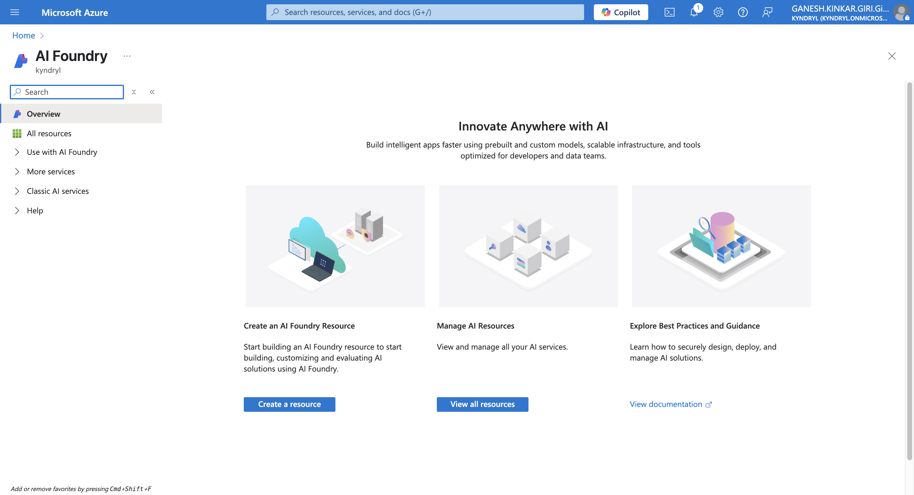

Here is the Azure AI services#
| Service | Description | Service Type | SaaS / Shelf-Managed | Use Case Example |
|---|---|---|---|---|
| Azure AI Agent Service | Combine generative AI with real-world data tools for agentic applications. | AI Platform Agent | SaaS | Build AI-powered virtual assistants that interact with databases and APIs |
| Azure AI Model Inference | Run inference on pre-trained flagship models in the Azure AI catalog. | Model Serving | SaaS | Perform real-time text generation or image classification |
| Azure AI Search | Cloud-based search-as-a-service with AI capabilities. | Cognitive Search | SaaS | Add AI-powered search to websites or applications |
| Azure OpenAI | Access large language models like GPT from OpenAI via API. | AI Model API | SaaS | Build chatbots, content generation tools, or summarization services |
| Bot Service | Build and deploy conversational bots connected to multiple channels. | Bot Framework | SaaS | Create customer service bots for web, Teams, and mobile platforms |
| Content Safety | Detects harmful or unwanted content in text and images. | Safety AI Service | SaaS | Moderate user-generated content on social platforms |
| Custom Vision | Train custom image classification models specific to your use case. | Computer Vision API | SaaS | Identify product defects in manufacturing |
| Document Intelligence | Extract structured data from documents like invoices, forms, etc. | Form Recognizer | SaaS | Automate invoice processing by extracting key fields |
| Face | Facial recognition API to detect and analyze human faces. | Vision API | SaaS | Implement identity verification or attendance tracking |
| Immersive Reader | Tool that helps users improve reading comprehension. | Reading Tool | SaaS | Provide accessible reading support in education apps |
| Language | Offers NLP services like entity recognition, sentiment analysis, etc. | NLP Platform | SaaS | Analyze customer feedback for sentiment and key topics |
| Speech | Speech-to-text, text-to-speech, translation, and speaker recognition services. | Speech AI API | SaaS | Transcribe meetings or generate natural-sounding audio narration |
| Translator | Translate text into 100+ languages and dialects using AI. | Translation API | SaaS | Provide multilingual support for global audiences |
| Video Indexer | Extract insights (speech, objects, people, sentiment) from video. | Media AI Platform | SaaS | Tag and index video content for easy retrieval in media libraries |
| Vision | Analyze visual content (images, videos) using pre-trained models. | Computer Vision API | SaaS | Detect objects and classify images in retail or security apps |
